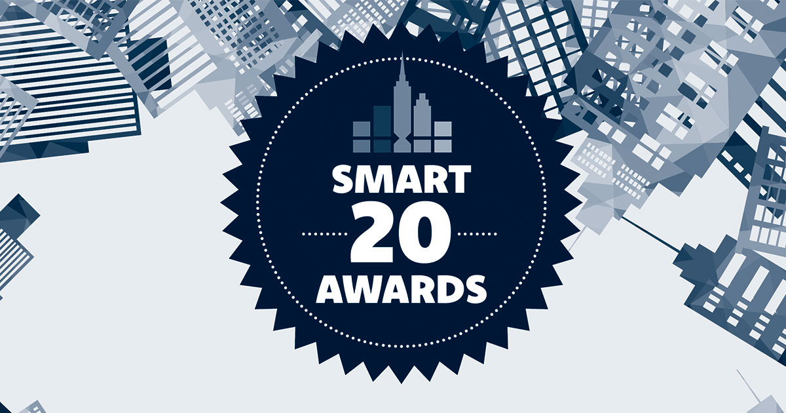
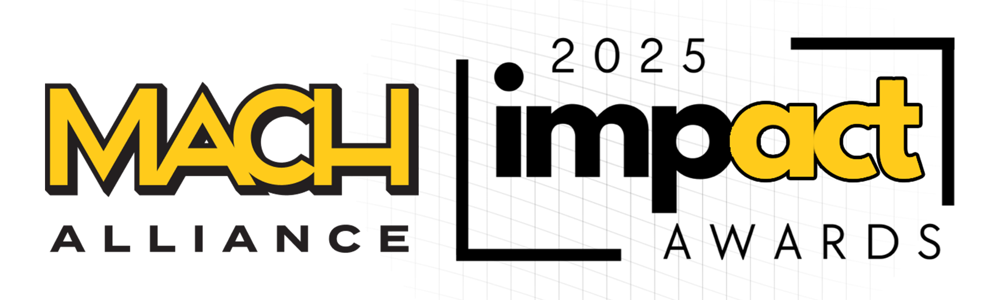
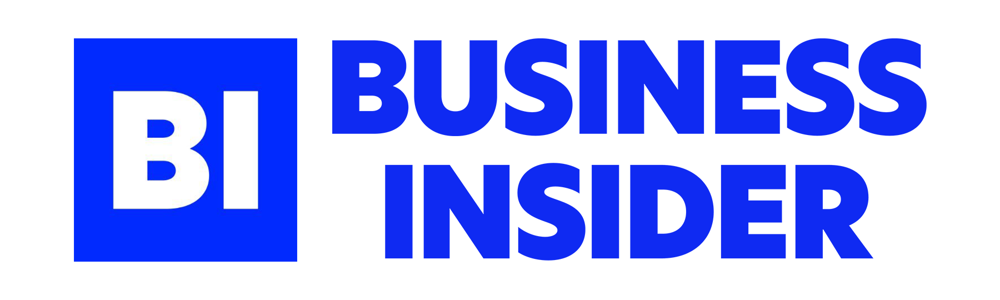
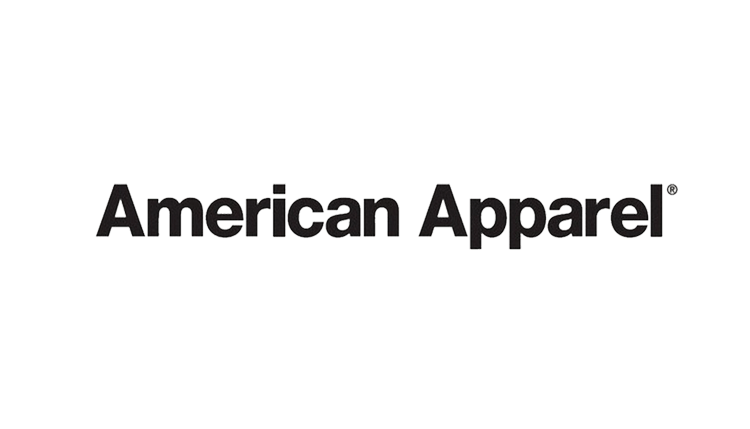
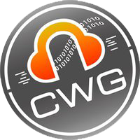
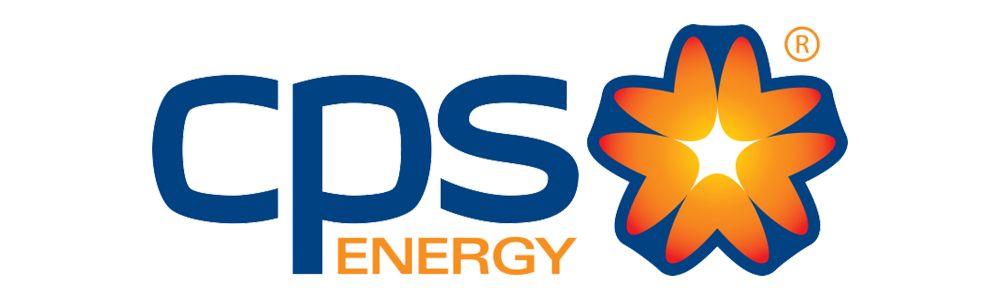

Enjoy your time working
A general product content modal with editorial hierarchy, soft image staging, and a clear action line. Use it when a section needs visual warmth on one side and concise narrative on the other.
See how it helped othersLarge Aeonik typography, quiet cards, tighter corners, explicit interaction states, and responsive layouts designed to feel structured on desktop, tablet, and mobile.
Number-first hierarchy with quiet explanation underneath.
12-column grid · large type · multi-column composition
8-column grid · reduced image dominance · tighter spacing
4-column grid · stacked hierarchy · proof first
Shadows are allowed only as very soft elevation on modal surfaces and hover states. Gradients are not part of the base system and should only appear in rare, restrained support graphics-not as page backgrounds. The optional gradient is now gray-based, not blue.
This system now uses 6 header classes: H1 through H6. Utility text for buttons, links, and fields is defined separately and shown alongside the headings.
| Class | Desktop | Tablet | Mobile |
|---|---|---|---|
| Display | 96 / 1.0 | 72 / 1.0 | 48 / 1.0 |
| Lockup Title | 46 / 0.96 | 37 / 0.96 | 30 / 0.96 |
| H1 | 72 / 1.04 | 56 / 1.04 | 40 / 1.04 |
| H2 | 56 / 1.08 | 44 / 1.08 | 34 / 1.08 |
| H3 | 44 / 1.1 | 36 / 1.1 | 28 / 1.1 |
| H4 | 36 / 1.12 | 30 / 1.12 | 24 / 1.12 |
| H5 | 32 / 1.14 | 28 / 1.14 | 22 / 1.14 |
| H6 | 26 / 1.18 | 22 / 1.18 | 18 / 1.18 |
| Metric | 60 / 0.98 | 44 / 0.98 | 36 / 0.98 |
| Body Large | 19 / 1.6 | 19 / 1.6 | 18 / 1.6 |
| Body | 17 / 1.65 | 17 / 1.65 | 16 / 1.65 |
| Small | 15 / 1.55 | 15 / 1.55 | 14 / 1.55 |
| Eyebrow | 11 / 1.0 | 11 / 1.0 | 11 / 1.0 |
| Utility | 15 / auto | 15 / auto | 14 / auto |
CTA corners are reduced. Primary and secondary buttons both have hover states. Link patterns include inline links, external links, text-action links, and utility links.
The uploaded logo pack breaks naturally into four groups: your personal brand, press and awards, company logos, and country flags. The system should present each group with a distinct but quiet layout treatment.
Use badges for filtering, tagging, or light utility state-not as decorative confetti.






These are real system components, not one-off mockups. Use the top nav for site-level movement, the middle nav for page/section switching, Let’s Build for conversion CTA, and the footer for closing navigation plus contact. Top-nav link hover and both CTA hover states should be visible and intentional in the system.
These are presentation variants of the same system behavior: restrained eyebrow, clear headline, and optional support copy. Use them as section-openers, not as decorative hero replacements.
Best for centered section openings that need a quiet utility label, one strong headline, and short supporting copy.
Best for major section openings with a small eyebrow, one strong headline, and optional body copy.
Best for tighter cards or grouped content where the heading needs presence without taking over the layout.
Best when a section intro needs a title on the left and concise support or stats on the right.
A planning-oriented content modal that pairs a quiet product illustration with a clear step-by-step value story. Use it when the interface needs to explain a workflow, not just decorate it.
Use this version when a section needs a clear editorial entrance and enough room for one short explanatory sentence.
A tighter version for sub-sections, modules, and narrative breaks inside a longer page.
Use this when the section intro needs support copy or utility context aligned alongside the title.
These are universal layout patterns. Use them anywhere across the site when a story beat needs structured text on one side and visual or embedded media on the other.
A general product content modal with editorial hierarchy, soft image staging, and a clear action line. Use it when a section needs visual warmth on one side and concise narrative on the other.
See how it helped others


Residents were in the dark without a reliable repair path.
Public coverage forced faster utility-vendor-city alignment and made service accountability non-negotiable.
Regional attention accelerated prioritization and tightened response expectations across teams.
The recap gave product, engineering, and operations a shared picture of the issue.
It reduced repeated explanation overhead and made the key tradeoffs easier to discuss.
A simple media block works well when the content needs both narrative framing and visual proof.
Replace this with a product screenshot, flow image, or interface proof when content is ready.
Start with a clear project shell, define the core work, and give the team one visible place to begin.
Connect owners, collaborators, and adjacent stakeholders so the project reflects the real operating team.
Keep planning, review, and status movement in one rhythm so timelines stay visible and work lands cleanly.
Experiences
Over the past 4+ years, I've had the opportunity to work on a wide range of design projects, collaborating with diverse teams and clients to bring creative visions to life.
Book a CallFebruary 2022 - Present
Innovated designs, New York, Senior Product Designer
January 2020 - February 2022
Led UX/UI, San Francisco . Crafting tomorrow's experiences
February 2022 - Present
Principal Designer, Berlin, Crafting tomorrow's experiences
I've led digital transformations across eCommerce, media, and global products where clarity, speed, and delivery discipline matter.

My work has been featured by leading publications and recognized through awards tied to commerce, product innovation, and digital execution.
These are not generic content modals. Use them when a page needs a full case-study narrative with section-level navigation, structured proof, and longer-form operating context.
These should feel like calm proof moments, not loud marketing sliders. Favor clean typography, subtle structure, and restrained accent use.
“The structure finally gave our team one calm place to make decisions, instead of re-litigating the same problems every sprint.”
“You made a messy operating picture feel obvious. Everyone could see the tradeoffs, and we moved faster because of it.”
“The system reduced back-and-forth and made launch decisions much easier.”
“It gave the work more clarity and made stakeholder reviews dramatically cleaner.”
“The page architecture made the whole product feel more premium without slowing us down.”
Icons should support scanning, not decorate empty space. Default style is 1.5–2px line icons in ink or muted; accent blue is only for active or emphasized states.
The full icon browser now lives on its own page so we can inspect every glyph in every supported family without turning the main design-system page into a wall of symbols.
Rounded app/UI glyphs with a calm, modern product tone.
Navigation, utility controls, and lightweight product actions.
Minimal editorial line icons with very light construction.
Quiet support states where the icon should stay secondary.
Product UI symbols with stronger structure and system clarity.
Application surfaces, dashboards, panels, and structured content.
Broad technical icon family with crisp geometric line work.
Operational, systems, and data-heavy interface moments.
Compact utility glyphs with high common-interface coverage.
Fallback utility symbols and generic interface actions.
Classic symbol set with broad legacy and utility coverage.
Legacy-style UI, broad symbol gaps, and utility-heavy layouts.